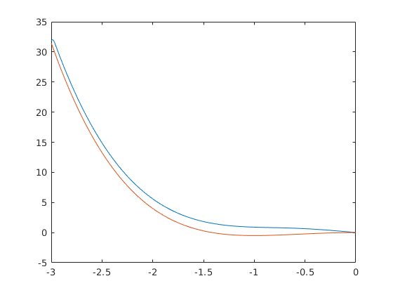

% skript for solving the exit rate for the 1d double well potential V=@(x) 1/2.*x.^4-x.^2 ; gradV = @(x) 2*x.*(x.^2-1); beta = 3; L_bound=-3; R_bound=0; n_boxes=1000; dx=(R_bound-L_bound)/(n_boxes-1); x=L_bound:dx:R_bound; e=ones(n_boxes,1); A = spdiags(1/beta*e*[1 -2 1]/(dx^2),[-1 0 1],n_boxes,n_boxes) + ... diag(-1*gradV(x))*spdiags(e*[-1 0 1]/(2*dx),[-1 0 1],n_boxes,n_boxes); %spdiags(-1*gradV(x)'*[-1 0 1]/(2*dx),[1 0 -1],n_boxes,n_boxes)'; %Neumann Randbedingungen auf der rechten Seite und Dirichlet auf der linken Seite %A(1,1) = -A(1,2); %A(n_boxes,n_boxes) = -A(n_boxes,n_boxes-1); % A1 = spdiags(sigma^2/(2*gamma^2)*e*[1 -2 1]/(dx^2),[-1 0 1],n_boxes,n_boxes) + ... % sparse(diag(-1*dpothm(x,t))*spdiags(e*[-1 0 1]/(2*dx),[-1 0 1],n_boxes,n_boxes)); % so implementiert wird falsch mit nabla V multipliziert % spdiags(-1*dpothm(x,t)'*[-1 0 1]/(2*dx),[-1 0 1],n_boxes,n_boxes); b=zeros(n_boxes,1); %b(end)=-1-1/dx^2; b(1)=0-1/beta*1/dx^2-gradV(x(1))/(2*dx); b(end)=0-1/beta*1/dx^2+gradV(x(end))/(2*dx); %exit1=A1\b; pot=linsolve(A-diag(ones(n_boxes,1)),b); figure(2) plot(x,pot) pot = -2*(1/beta)*log(pot); plot(x,V(x)'+pot);hold on plot(x,V(x)); hold off % figure(3) % plot(x(350:end),V(x(350:end))'+pot(350:end),x_pred(2:50),per_pot(2:50)+5.8,'Linewidth',3); % legend('HJB','Sampled HJB') %save('PDETimes.mat','exit','ext','-v7.3')